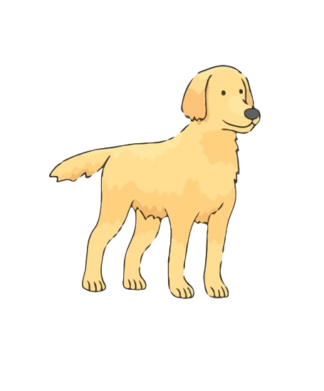

A Dogs Purpose:
Page 1: Bailey's Life
Bailey is the initial incarnation of the protagonist in "A Dog's Purpose." As a young pup, he finds himself bewildered by the world around him, guided by his insatiable curiosity and boundless energy. Bailey's first experiences are with a young boy named Ethan. Ethan becomes Bailey's beloved human companion, and together they embark on countless adventures filled with laughter, love, and companionship. Bailey learns the value of loyalty, friendship, and the unconditional love that exists between a dog and his human.
However, as time passes, Bailey's life comes to an end, leaving behind a grieving Ethan. But death is not the end for Bailey; it's merely a transition to his next incarnation, where he continues his journey with a new purpose.
